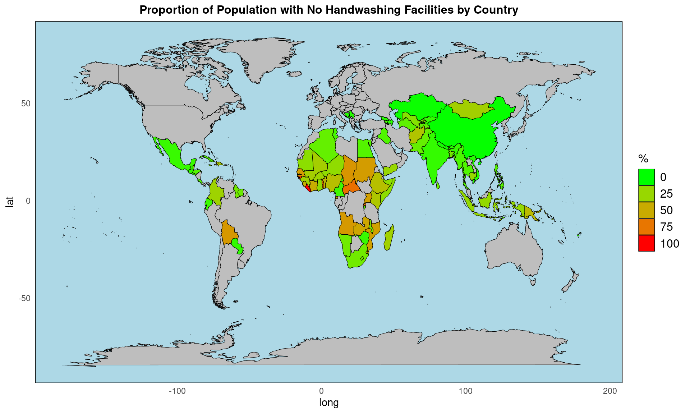
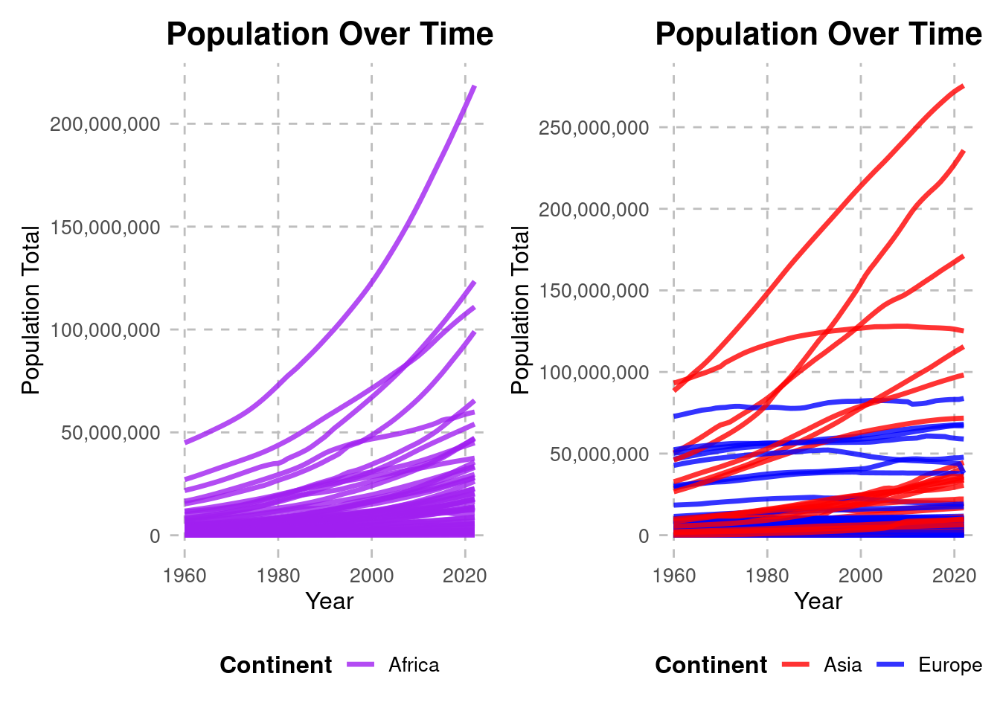
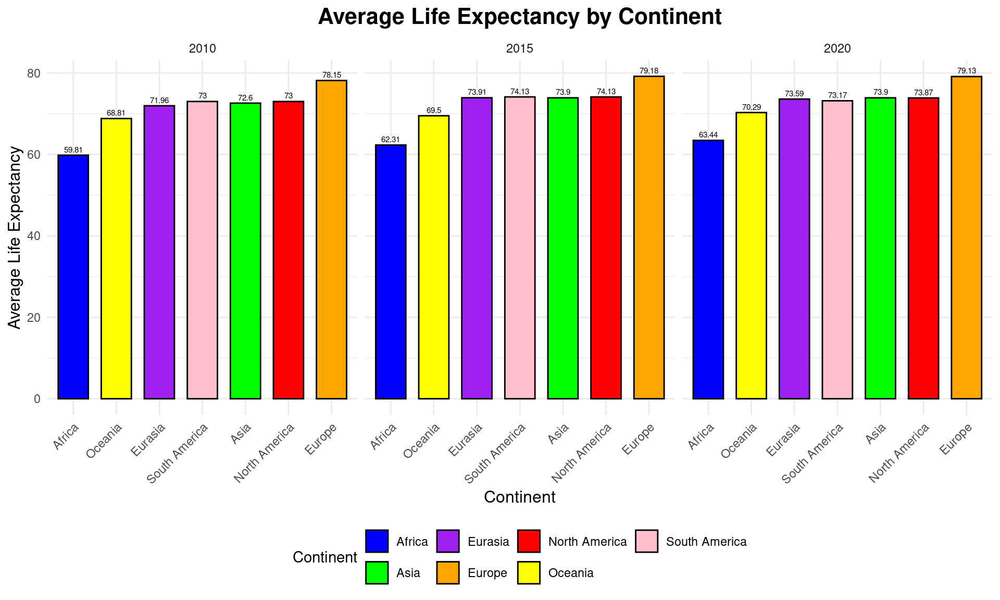
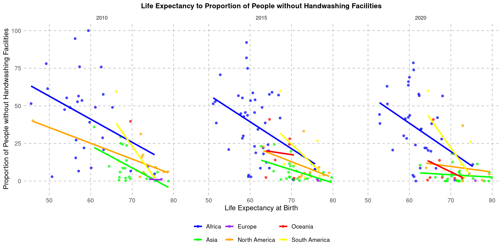

Gauging the Global Grimy Hands Pandemic
An Analysis of Global Access to Hygiene
To Pinpoint the Lack of Handwashing Resources
The importance of handwashing facilities has been spotlighted like never before in the wake of the COVID-19 pandemic. Effective hand hygiene, including regular handwashing with soap and water, has emerged as a critical measure in combating the spread of viruses. Handwashing not only helps prevent the transmission of COVID-19 but also various other infectious diseases. It serves as a frontline defense, especially in settings where maintaining physical distance is challenging. Accessible handwashing facilities, coupled with proper hygiene practices, are vital in protecting individuals and communities from illness.
Addressing the Hygiene Gap in Africa
The lack of adequate handwashing facilities, particularly prevalent in many regions of Africa, poses a significant public health challenge. Access to basic hygiene infrastructure, such as soap and clean water, remains limited in numerous communities across the continent.
- 63% of the Sub-Saharan population has no reliable access to soap and water
- 12% of the global population wash their hands before a meal
This deficiency is exacerbated by various socio-economic factors, including poverty, inadequate sanitation systems, and limited access to healthcare resources. Addressing the disparities in handwashing facilities requires a concerted effort from governments, non-governmental organizations, and international partners to ensure that all individuals have access to this fundamental preventive measure, safeguarding the health and well-being of communities throughout Africa and beyond.

The Population Problem
The exponential population growth experienced by almost all countries in Africa since 1960 as illustrated in this graph has significant implications for the spread of diseases, particularly given the lack of adequate handwashing facilities across the continent. With a rapidly growing population, urbanisation often outpaces infrastructure development, leading to crowded living conditions and inadequate sanitation systems. As a result, the spread of communicable diseases, such as cholera, dysentery, and respiratory infections, is facilitated.
African countries follow an exponential population increase.
Most European and Asian countries follow a stable or linear population curve.
It is worth highlighting the noticeable difference in population curves when compared to Asian and European countries, where majority of countries maintain quite stable population levels. This disparity in access to handwashing facilities between Africa and regions like Europe and Asia underscores the urgent need for investment in public health infrastructure and hygiene education to mitigate the spread of diseases and improve overall health outcomes in Africa.
The Impact on Life Expectancy
This scatter plot depicting life expectancy against the proportion of the population without handwashing facilities reveals a stark contrast between African countries and the rest of the world. In Africa, represented by the red data points, there’s a clear trend indicating that as the proportion of the population lacking handwashing facilities increases, life expectancy decreases. This suggests a significant impact of inadequate sanitation on health outcomes, contributing to lower life expectancy rates.
Conversely, other continents, notably Asia, demonstrate the potential for achieving high life expectancies despite substantial population levels. This further highlights the importance of targeted efforts to improve sanitation infrastructure and hygiene practices in African countries.
The Appendix displays the same graph, in a simplified form to accurately display a linear regression line for each continents’ data. These linear regression lines illustrate marginal improvements every 5 years when focusing on African countries, however more investment healthcare infrastructure is heavily advised.

A Mission to Catch Up
This bar chart sends alarm bells when you notice the huge gap in average life expectancies. The 5 yearly comparisons show marginal improvements across most countries however a 15.69 year difference is seen between Europe and Africa in 2020. This is unacceptable and to put this into persepctive here are a couple of things which take 15 years:
- Completing 1st and 2nd level education in Ireland.
- Training to become a medical doctor.
- Growing an apple tree to maturity.
- Planning and building a skyscraper.
- Training and preparing for the Olympics.
This analysis has not come up short in proving the necessity that is access to handwashing facilities. It is now proven that there is a clear gap in healthcare infrastructure around the world, which calls for increased international aid and resource division.

Appendix

Stephen Rice
Student Number: 20386026
AC584
Module Coordinator: Dr. Damien Dupré